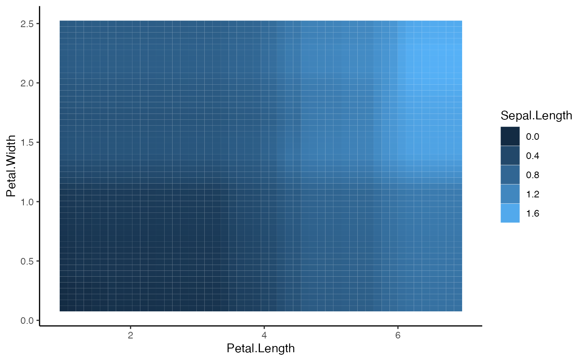
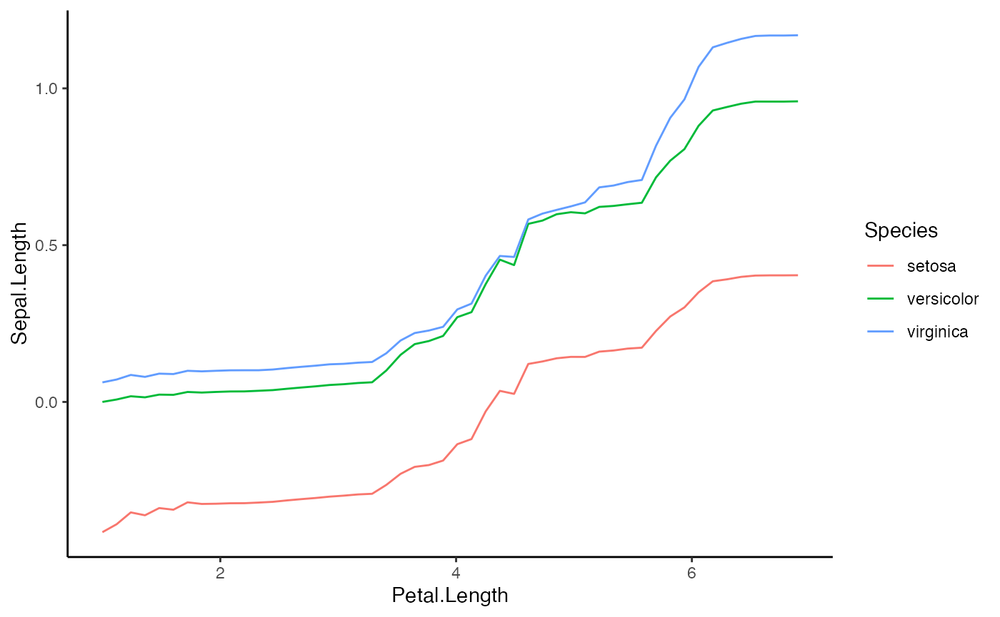
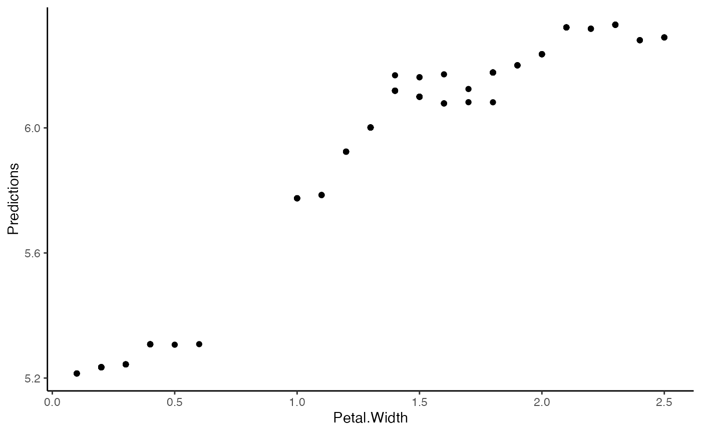

Advanced PDP Features
In addition to the standard PDP plotting and prediction functions, we offer several additional features. One example is to create PDP plots for 2 features concurrently.
# Load the required packages
library(Distillery)
library(Rforestry)
# Load in data
data("iris")
set.seed(491)
data <- iris
# Train a random forest on the data set
forest <- forestry(x=data[,-1],
y=data[,1])
# Create a predictor wrapper for the forest
forest_predictor <- Predictor$new(model = forest,
data=data,
y="Sepal.Length",
task = "regression")
forest_interpret <- Interpreter$new(predictor = forest_predictor)Bivariate PDP Plots
In order create PDP plots using the plot() method, we must pass arguments to the features.2d argument of the plot() function. When both features are continuous, the PDP plot will become a heatmap.
# Make 2d PDP plots
pdp_plots <- plot(forest_interpret, method = "pdp", features.2d = data.frame(col1 = c("Petal.Length"),
col2 = c("Petal.Width")))## Warning in xtfrm.data.frame(x): cannot xtfrm data frames
## Warning in xtfrm.data.frame(x): cannot xtfrm data frames
## Warning in xtfrm.data.frame(x): cannot xtfrm data frames
plot(pdp_plots$Petal.Length.Petal.Width)
We can also create 2d PDP plots for combinations of continuous and categorical features.
# Make 2d PDP plots with continuous + categorical
pdp_plots <- plot(forest_interpret, method = "pdp", features.2d = data.frame(col1 = c("Petal.Length"),
col2 = c("Species")))## Warning in xtfrm.data.frame(x): cannot xtfrm data frames
## Warning in xtfrm.data.frame(x): cannot xtfrm data frames
## Warning in xtfrm.data.frame(x): cannot xtfrm data frames
plot(pdp_plots$Petal.Length.Species)
Getting Bivariate PDP Functions
We can also get the bivariate PDP functions from an Interpreter object. Here we display the predictions of the PDP function for Species and Petal.Width.
preds_2d <- forest_interpret$pdp.2d$Species$Petal.Width(data.frame(col1 = iris$Species, col2 = iris$Petal.Width))
data.frame(Petal.Width = iris$Petal.Width,
Predictions = preds_2d) %>%
ggplot(aes(x = Petal.Width, y = Predictions))+
geom_point()+
theme_classic()